fneg와 select의 순서를 바꾸는 조건을 이해하기
수학적으로 가능한 치환과 실제 비용이 줄어드는 치환을 나누고 fast-math flags를 검토한다.
LLVM_85251_.pdf의 전체 내용입니다. 설명·코드·표·검증 기록을 생략하지 않고 옮겼습니다. 그림 안의 문자 인식 결과에는 기호 오류가 있을 수 있어 이미지도 함께 제공합니다.
이 문서의 목차
LLVM · INSTCOMBINE · CLOSED ISSUE ANALYSIS / LLVM Issue #85251 분석 / fneg(select) 최적화와 실제 패치의 형성 과정
LLVM · INSTCOMBINE · CLOSED ISSUE ANALYSIS
LLVM Issue #85251 분석
fneg(select) 최적화와 실제 패치의 형성 과정
01 Issue ≠ Patch
02 Legality ≠ Profitability
03 10-line patch, large validation surface
처음에는 #85251을 직접 해결한 패치를 분석한다고 생각했지만, 실제 PR은 다른 최적화의 리뷰에서 출발했고 결과 적으로 이 이슈까지 해결했습니다.
정답 코드를 보기 전에 재현·Alive2·codegen을 먼저 기록하고, 그다음 실제 accepted patch와 비교하는 순서로 진행했습니다.
LLVM 멘티 최진범
LLVM Issue #85251 · PR #89947
페이지 배치·기호·도식 확인하기
PDF의 글꼴 문자표에서 일부 코드 기호가 다르게 추출됩니다. 코드 기호는 아래 페이지 배치에서 확인하세요.

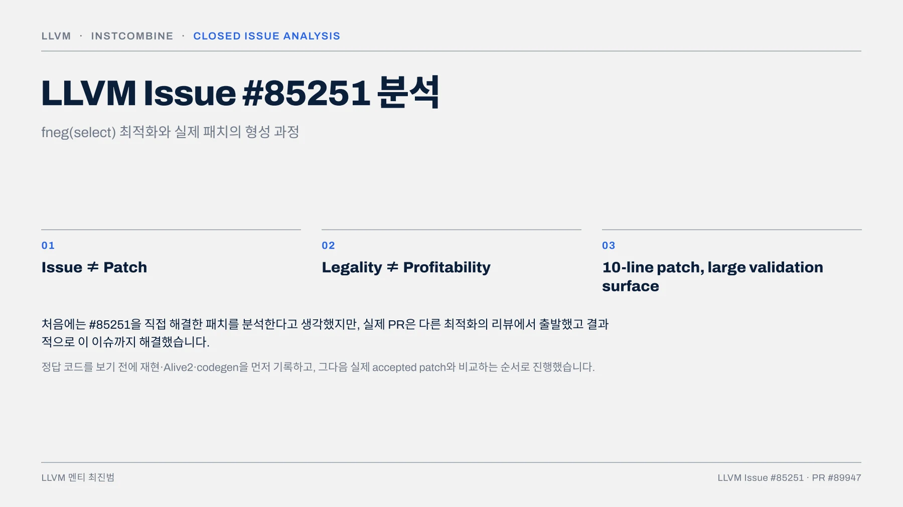
02 · MISSED OPTIMIZATION / #85251이 제시한 문제 / BEFORE EXPECTED
02 · MISSED OPTIMIZATION
#85251이 제시한 문제
BEFORE
%sel = select i1 %cond,
float -1.0,
float 1.0
%neg = fneg float %sel
ret float %negEXPECTED
%result = select i1 %cond,
float 1.0,
float -1.0
ret float %resultCONDITION
cond = truecond = falseBEFORE
-(-1.0) = 1.0-(1.0) = -1.0이슈의 reduced example 자체는 조건별 대입만으로 의미 동치를 설명할 수 있습니다.
EXPECTED
1.0-1.002 / 12
LLVM Issue #85251
페이지 배치·기호·도식 확인하기
PDF의 글꼴 문자표에서 일부 코드 기호가 다르게 추출됩니다. 코드 기호는 아래 페이지 배치에서 확인하세요.

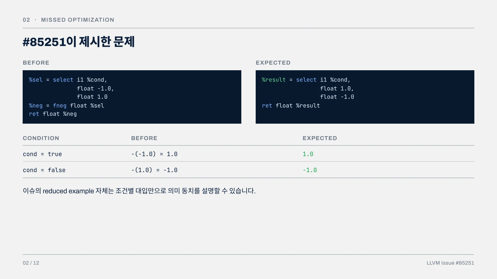
03 · PREDICTION BEFORE THE DIFF / diff 확인 전 예상 / 항목 DIFF 보기 전 예상 전혀 예상하지 못한 것
03 · PREDICTION BEFORE THE DIFF
diff 확인 전 예상
항목 DIFF 보기 전 예상
구현 위치
InstCombineAddSub.cpp :: visitFNeg()예상 패턴
-1.0 / 1.0 상수쌍의 부호를 직접 뒤집는 특수- case fold
타입
예상 테스트
scalar float 전용
reduced test 1개
수익성 조건
고려하지 못함
이 예상과 실제 accepted patch의 차이가 이 발표의 본문이다.
03 / 12
전혀 예상하지 못한 것
one-use gate
fixed vector
nabs idiom
immediate constant 일반화
FMF 양방향 전파
ConstantExpr 배제
Issue #85251 본문만 읽은 시점의 기록
페이지 배치·기호·도식 확인하기
PDF의 글꼴 문자표에서 일부 코드 기호가 다르게 추출됩니다. 코드 기호는 아래 페이지 배치에서 확인하세요.

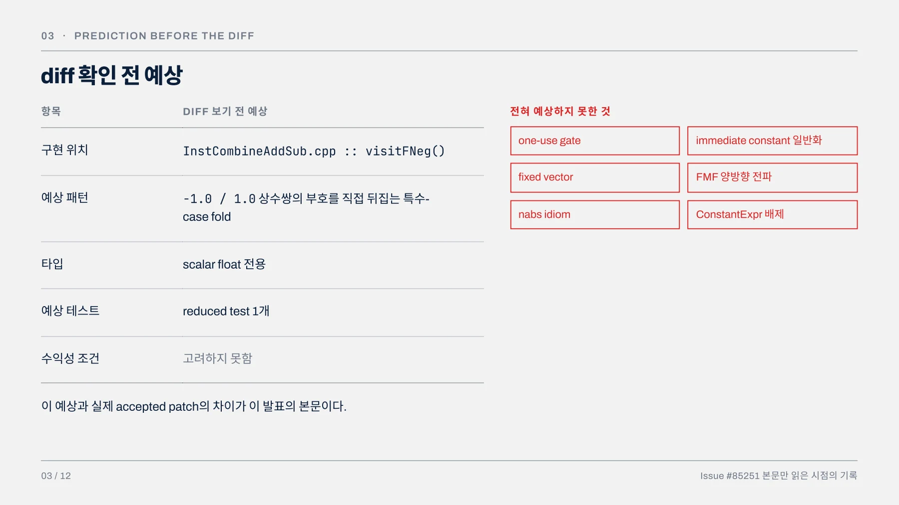
04 · REPRODUCTION & VERIFICATION / 패치 적용 전후 재현 / OPT -PASSES=INSTCOMBINE -S
04 · REPRODUCTION & VERIFICATION
패치 적용 전후 재현
OPT -PASSES=INSTCOMBINE -S
기준 커밋 결과
d285e54320e9
(cbb0477e^)select 뒤에 외부 fneg가 남음
cbb0477e9의미
fneg 제거, 상수 부호가 뒤집힌 select 로 fold
missed optimization 재현 및 수정 확인
04 / 12
ALIVE2 — 이슈 본문 SRC/TGT 직접 실행
Transformation seems to be correct!
alive2.llvm.org/ce/z/RWUbrQCOMPILER EXPLORER — CLANG TRUNK -O2
x86-64 AArch64 RISC-V64세 타깃 모두 패치 전 src와 패치 후 tgt의 어셈블리가 같았다.
godbolt.org/z/v33oKWjK8Alive2 ce/z/RWUbrQ · godbolt.org/z/v33oKWjK8 · commit cbb0477e^ / cbb0477e
페이지 배치·기호·도식 확인하기
PDF의 글꼴 문자표에서 일부 코드 기호가 다르게 추출됩니다. 코드 기호는 아래 페이지 배치에서 확인하세요.

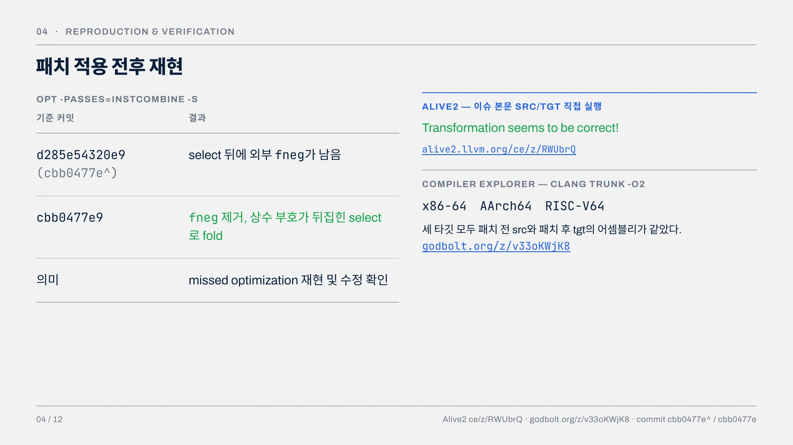
05 · HOW THE ISSUE CLOSED / 이슈 종료 경로와 PR #89947의 출발점 / ISSUE TIMELINE 실제 PR 출발점
05 · HOW THE ISSUE CLOSED
이슈 종료 경로와 PR #89947의 출발점
ISSUE TIMELINE
#85251 등록
신규 기여자 “I'd like to work on this”
dtcxzyw가 InstCombine contributor guide 안내
진척 정체
다른 기여자가 takeover 문의
“PR #89947에서 이미 처리됨”
Issue close
실제 PR 출발점 “이미 처리됨”이라고 언급된 #89947을 역추적하면
PR #86390
Fold fabs over select
↓
REVIEWER
“Do we handle fneg?”
“Does the fneg + fabs combo fold the same?”
“The same should be applied with fneg, and with fneg(fabs(x))”
↓
PR #89947
Fold fneg over select
↓
결과 nabs idiom 노출 + 결과적으로 #85251 해결
nabs — 별도 intrinsic이 아니라 fneg(fabs(x)), 즉 -|x| 형태
[코드 해석]
test_fneg_fabs_select는 리뷰어가 직접 언급한 fneg(fabs(x)) 케이스를 검증하기 위해 포함된 것으로 해석할 수 있다.
05 / 12
Issue #85251 comments · PR #86390 review · PR #89947
페이지 배치·기호·도식 확인하기
PDF의 글꼴 문자표에서 일부 코드 기호가 다르게 추출됩니다. 코드 기호는 아래 페이지 배치에서 확인하세요.

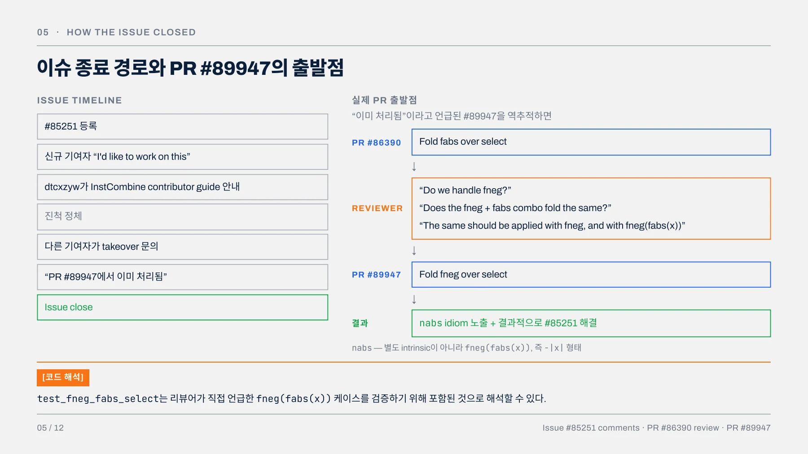
06 · PREDICTION VS ACCEPTED PATCH / 내 예상과 실제 accepted patch / fneg(select Cond, X, Y) → select Cond, fneg(X),
06 · PREDICTION VS ACCEPTED PATCH
내 예상과 실제 accepted patch
fneg(select Cond, X, Y) → select Cond, fneg(X), fneg(Y)축
패턴
진입 조건
타입
DIFF 보기 전 예상
-1.0 / 1.0 특수 사례고려 못함
scalar
실제 ACCEPTED PATCH
한 arm이 immediate constant인 일반형기존 one-use gate
fixed vector 테스트 포함
PR의 직접 동기
FMF
negative test
이슈의 바깥 fneg 제거
고려 못함
생각 못함
nabs idiom 노출
양방향 전파 검증
multi-use, maxnum이슈는 “무엇이 가능한가”를 보여주고, 패치는 “무엇까지 적용해야 하는가”를 결정한다.
06 / 12
배운 점
이슈보다 넓게 canonicalize
기존 profitability policy 재사용
테스트로 타입 일반화 확인
PR의 출발점이 달랐음
FP transform에는 FMF 검토 필수
안 되는 경우도 테스트
Issue #85251 · PR #89947
페이지 배치·기호·도식 확인하기
PDF의 글꼴 문자표에서 일부 코드 기호가 다르게 추출됩니다. 코드 기호는 아래 페이지 배치에서 확인하세요.

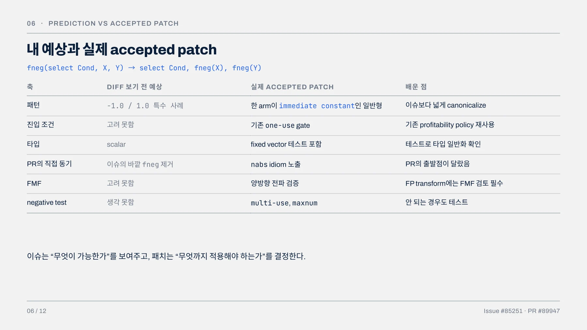
07 · PROFITABILITY BOUNDARY / 적용 경계와 m_ImmConstant / SELECT ARMS 기존 변환 후 판단 LLVM/INCLUDE/LLVM/IR/PATTERNMATCH.
07 · PROFITABILITY BOUNDARY
적용 경계와 m_ImmConstant
SELECT ARMS 기존
변환 후
Variable / Variable select + fneg fneg + fneg +
= 2 select = 3Variable / Constant 2 2Constant / Constant 2 1InstCombine IR 기준의 개략적 instruction count다. 타겟별 실행 비용 계산이 아니다.
실제 조건
if (match(X, m_ImmConstant()) ||
match(Y, m_ImmConstant()))판단
적용하지 않음
적용
적용
LLVM/INCLUDE/LLVM/IR/PATTERNMATCH.H · A6B2CEB
/// Match an arbitrary immediate Constant
/// and ignore it.
inline match_combine_and<class_match<Constant>,
match_unless<constantexpr_match>>
m_ImmConstant() {
return m_CombineAnd(m_Constant(),
m_Unless(m_ConstantExpr()));
}m_ImmConstant() = m_Constant() AND NOT m_ConstantExpr()리뷰 우려 · PR #86390
#86390 리뷰에서 “weird constant expression”이라면 오히려 나빠질 수 있다는 우려가 있었다.
적용 대상
m_ImmConstant()는 scalar뿐 아니라 ConstantExpr을 포함하지 않는 fixed-vector constant도 허용한다.
m_ImmConstant()는 이 fold의 IR-level 적용 경계다. 적어도 한 arm이 즉시 상수일 때만 변환해 instruction 수 증가를 피하고, ConstantExpr은 제외한다.
07 / 12
PR #86390 review · PatternMatch.h at commit a6b2cebc...
페이지 배치·기호·도식 확인하기
PDF의 글꼴 문자표에서 일부 코드 기호가 다르게 추출됩니다. 코드 기호는 아래 페이지 배치에서 확인하세요.

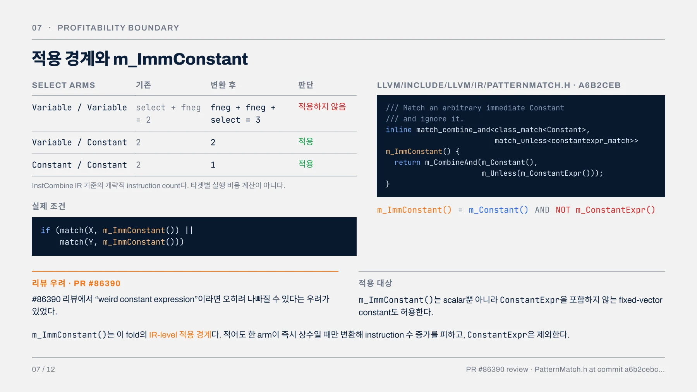
08 · WHERE IT LANDS & WHAT IT ADDS / 기존 fold chain의 빈칸과 추가된 10줄 / VISITFNEG() — FNEG OVER SELECT 추가된 코드 — 10줄
08 · WHERE IT LANDS & WHAT IT ADDS
기존 fold chain의 빈칸과 추가된 10줄
VISITFNEG() — FNEG OVER SELECT
visitFNeg()
└─ operand가 one-use select인가?├─ -(Cond ? -P : Y) → Cond ? P : -Y├─ -(Cond ? X : -P) → Cond ? -X : P└─ -(Cond ? X : C) → Cond ? -X : -C[기존]
[기존]
[#89947]진입 조건 — 기존 코드
if (!match(Op, m_OneUse(m_Value(OneUse))))
return nullptr;추가된 코드 — 10줄
if (match(X, m_ImmConstant()) ||
match(Y, m_ImmConstant())) {
Value *NegX =
Builder.CreateFNegFMF(X, &I, X->getName() + ".neg");
Value *NegY =
Builder.CreateFNegFMF(Y, &I, Y->getName() + ".neg");
SelectInst *NewSel =
SelectInst::Create(Cond, NegX, NegY);
propagateSelectFMF(NewSel, /*CommonOperand=*/true);
return NewSel;
}기존 조건
one-use gate는 원래 있었다
08 / 12
신규 경계
m_ImmConstant 한 줄뿐이다변경하지 않은 것
새 API·새 파일·ValueTracking·별도 pass 없음
Commit a6b2cebc300800126437a0e440cc9d3ec36edccb
페이지 배치·기호·도식 확인하기
PDF의 글꼴 문자표에서 일부 코드 기호가 다르게 추출됩니다. 코드 기호는 아래 페이지 배치에서 확인하세요.

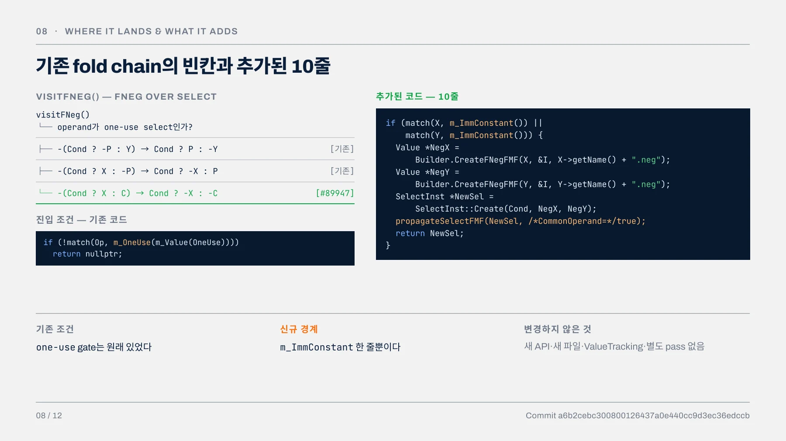
09 · FAST-MATH FLAGS & SIGNED ZERO / CommonOperand=true와 _fmf2의 nsz 제거 차단 / _FMF1 원래 select에만 nnan ninf nsz가 있
09 · FAST-MATH FLAGS & SIGNED ZERO
CommonOperand=true와 _fmf2의 nsz 제거 차단
_FMF1 원래 select에만 nnan ninf nsz가 있는 경우 — 바깥 fneg에 FMF가 없으므로 새 fneg에는 플래그가 붙지 않는다. select-origin FMF 확인용.
_FMF2 — 바깥 FNEG에만 FMF가 있음
%sel = select i1 %cond, float %x, float 1.0
%neg = fneg nnan ninf nsz float %sel── 패치 후 ──
%x.neg = fneg nnan ninf nsz float %x
%neg = select nnan ninf nsz i1 %cond,
float %x.neg, float -1.0PROPAGATESELECTFMF — HELPER 조건
if (!OldSel->hasNoSignedZeros() &&
!CommonOperand &&
!isGuaranteedNotToBeUndefOrPoison(
OldSel->getCondition()))
S->setHasNoSignedZeros(false);조건
Old select에 nsz 존재
condition의 definedness
CommonOperand
결과
_FMF2에서의 값
false정적으로 확인되지 않음
truensz 제거 분기 차단
[확인된 사실]
CommonOperand=true이므로 helper가 새 select의 nsz를 제거하지 않는다.
[구조적 직관]
신규 fold는 양쪽 arm에 동일하게 fneg를 분배하므로, 기존 double-negation fold처럼 arm 처리가 한쪽 으로 치우치지 않는다.
정식 안전성 근거
PR에 첨부된 Alive2 FMF proof · ce/z/-h6Vuo
09 / 12
PR #89947 · Alive2 FMF proof
이 페이지에 연결된 자료
페이지 배치·기호·도식 확인하기
PDF의 글꼴 문자표에서 일부 코드 기호가 다르게 추출됩니다. 코드 기호는 아래 페이지 배치에서 확인하세요.

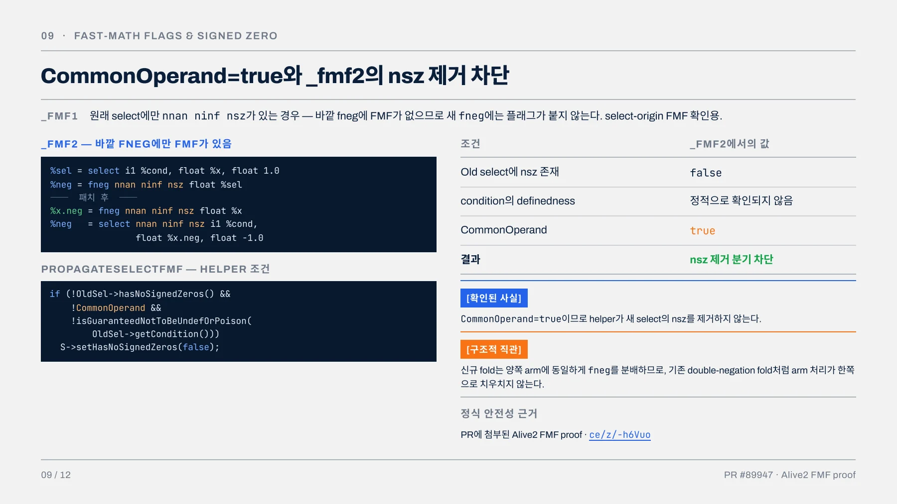
10 · TEST SURFACE / Pre-commit test functions 10개: CHECK 변경 8개, 유지 2개 / PRE-COMMIT TESTS FOLD 적용 의도적 미적용
10 · TEST SURFACE
Pre-commit test functions 10개: CHECK 변경 8개, 유지 2개
PRE-COMMIT TESTS
10
구현 전에 현재 baseline CHECK를 먼저 고정한 테스트
FOLD 적용
8
구현 후 CHECK가 변경된 8개
내가 예상 1
constants
PR에서 배움 7 fixed vector constants · variable / constant · constant / variable · FMF from select · FMF from outer fneg · nabs idiom · fneg(fabs(select))
2 · TEST_FNEG_VEC — NON-SPLAT FIXED VECTOR, CONSTANTEXPR 없음
%sel1 = select <2 x i1> %cond,
<2 x float> <float 0.0, float -0.0>,
<2 x float> <float -0.0, float 0.0>
%neg = fneg <2 x float> %sel1의도적 미적용
2
의도적으로 변경되지 않은 2개
1. test_fneg_select_constant_var_multiuse기존 one-use profitability policy가 유지되는가
2. test_fneg_select_maxnum기존 maxnum canonicalization을 깨지 않는가
multi-use 제한은 이 패치가 만든 guard가 아니다. 기존 one-use 진입 조건을 우 회하지 않는지 확인하는 regression test다.
기능 커밋에서 발생한 LINE CHURN
InstCombineAddSub.cppfneg.llsimplify-demanded-fpclass.ll10 / 12
10 lines30 lines changed64 lines changed국소적인 10줄 fold가 기존 nofpclass 테스트의 canonical output과 SSA 이름까 지 바꾸었다. 우연한 변경이 아니라, 새 canonicalization이 기존 최적화 파이프라 인에 들어가면서 발생한 collateral output change다.
PR #89947
페이지 배치·기호·도식 확인하기
PDF의 글꼴 문자표에서 일부 코드 기호가 다르게 추출됩니다. 코드 기호는 아래 페이지 배치에서 확인하세요.

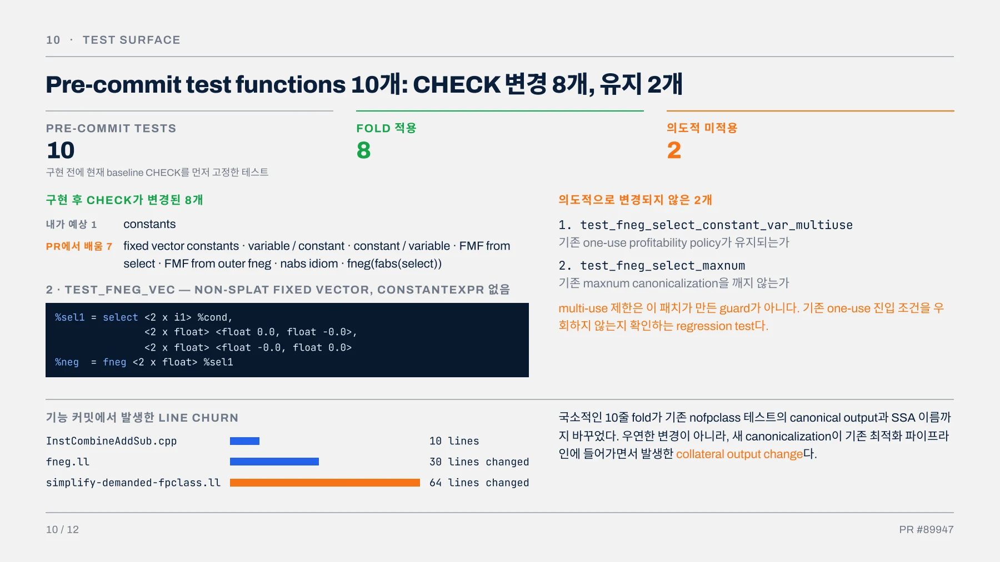
11 · COMMIT STRUCTURE / 리뷰에서는 2커밋, main에는 1커밋 / PR BRANCH MAIN BRANCH
11 · COMMIT STRUCTURE
리뷰에서는 2커밋, main에는 1커밋
PR BRANCH
Commit 1 · 2898951[InstCombine] Add pre-commit tests. NFC.
역할 — 패치 전 baseline CHECK 고정
↓
Commit 2 · a6b2ceb[InstCombine] Fold fneg over select
역할 — 구현 + CHECK 변화 + collateral update
MAIN BRANCH
SQUASH COMMIT
cbb0477e9a8d1e695d10a7e263d5e26757114f70[InstCombine] Fold fneg over select (#89947)
3 files changed 164 insertions 33 deletions
2커밋 구조 덕분에 리뷰 단계에서 baseline CHECK와 functional diff를 분리해서 검토할 수 있었다.
git fetch https://github.com/llvm/llvm-project.git \
refs/pull/89947/head:refs/heads/pr-89947
git log --oneline pr-89947 -3일반 clone에서는 PR branch commit SHA가 보이지 않을 수 있으므로 refs/pull/89947/head를 명시적으로 fetch해야 한다.
11 / 12
PR #79007 · INSTCOMBINE CONTRIBUTOR GUIDE · NIKIC
pre-commit tests update_test_checks.py
negative and multi-use tests vector and FMF tests Alive2 proofs
PR #89947 · commit cbb0477e9a8d1e695d10a7e263d5e26757114f70
페이지 배치·기호·도식 확인하기
PDF의 글꼴 문자표에서 일부 코드 기호가 다르게 추출됩니다. 코드 기호는 아래 페이지 배치에서 확인하세요.

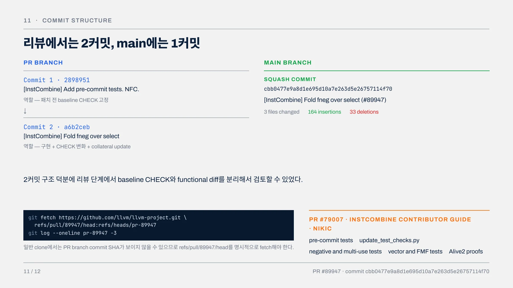
12 · WHAT I GOT WRONG, WHAT I LEARNED / 이번 분석에서 얻은 세 가지
12 · WHAT I GOT WRONG, WHAT I LEARNED
이번 분석에서 얻은 세 가지
01
Issue ≠ Accepted Patch
이슈의 reduced case만 보고 특수 처리를 예상했지만, 실 제 패치는 더 일반적인 canonicalization이었다.
02
Legality 검증만으로는 부족
Alive2로 의미 동치를 확인한 뒤에도 one-use, instruction count, ConstantExpr 같은 적용 경계를 검 토해야 했다.
03
테스트는 성공 사례 목록이 아니다
FMF·vector뿐 아니라 multi-use·maxnum처럼 변환하 면 안 되는 경계까지 고정해야 한다.
다음 closed issue에서는 실제 diff를 보기 전에 구현 위치, matcher, positive/negative test를 더 구체적으로 작성한 뒤 accepted patch와 비교하겠다.
Q&A
12 / 12
Issue #85251 · PR #89947
페이지 배치·기호·도식 확인하기
PDF의 글꼴 문자표에서 일부 코드 기호가 다르게 추출됩니다. 코드 기호는 아래 페이지 배치에서 확인하세요.

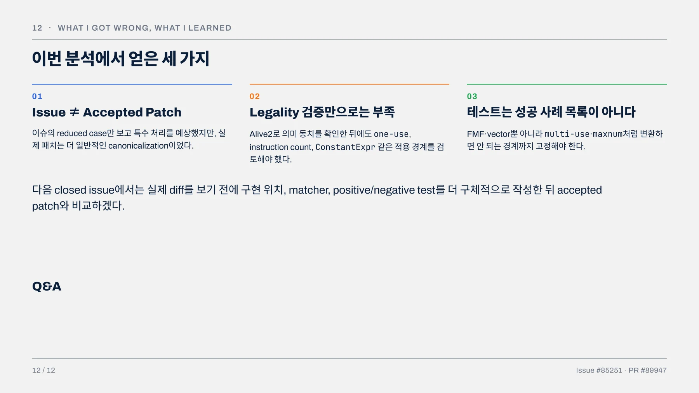
APPENDIX · DOWNSTREAM / 이 canonicalization의 downstream 영향 / 2025 이 커밋이 X86 컴파일 타임 크래시를 드러낸 것으로 bisect됨
APPENDIX · DOWNSTREAM
이 canonicalization의 downstream 영향
2025 이 커밋이 X86 컴파일 타임 크래시를 드러낸 것으로 bisect됨
↓
아님 fold 자체가 틀려서 되돌린 것은 아니다
↓
수정 기존 SelectionDAG node-lifetime 문제가 PR #139029에서 수정됨
작은 middle-end 변경의 validation surface가 downstream backend까지 확장된 사례다.
Appendix
Issue #138944 · PR #139029
페이지 배치·기호·도식 확인하기
PDF의 글꼴 문자표에서 일부 코드 기호가 다르게 추출됩니다. 코드 기호는 아래 페이지 배치에서 확인하세요.

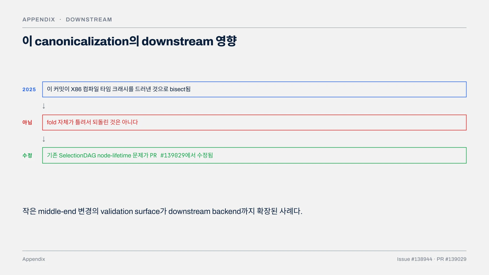
핵심 원리와 편집 주석
문제와 일반형
fneg(select Cond, X, Y)
↓
select Cond, fneg(X), fneg(Y)원래 이슈를 해결하는 동작은 다른 최적화의 리뷰 과정에서 형성되었다. 이슈의 설명과 최종 패치의 출발점은 항상 같지 않다.
가능한 변환과 유리한 변환
모든 입력에서 위 식을 그대로 전개하면 fneg가 둘로 늘 수 있다. 실제 패치는 상수 arm처럼 한쪽 연산을 접을 수 있는 조건을 검사한다.
타입에 맞는 즉시 상수 matcher와 기존 fold 순서가 비용 경계를 만든다. 수학적으로 같다는 사실만으로 적용 범위를 정하지 않는다.
fast-math flags와 signed zero
새 연산의 플래그는 근거가 있는 범위에서만 전달해야 한다. select에 있던 플래그와 바깥 fneg에 있던 플래그를 같은 것으로 보지 않는다.
자료는 CommonOperand 처리와 nsz 제거를 막는 테스트를 구분한다. 서로 다른 플래그 조합에서 어떤 속성이 남는지 CHECK로 확인한다.
검증과 패치의 형성
작성자는 재현, Alive2, codegen 결과를 먼저 남긴 뒤 accepted patch와 비교했다. 테스트의 10개 함수 가운데 출력이 바뀌는 것과 유지되는 것을 나누어 설명한다.
PR의 리뷰 커밋 구조와 main의 병합 커밋 구조도 구분한다. 코드가 짧아도 타입, 상수, 사용처, 플래그와 후속 백엔드가 검증 범위에 들어간다.
문서 전문과 버전
- PDFPDF 원자료 · 13쪽LLVM_85251_.pdf
각 자료는 별도의 버전입니다. 같은 주제라도 구현 상태·설명 범위·수치가 다를 수 있습니다.
관련 이슈와 PR
구현·병합 상태와 측정값은 해당 제출 자료의 작성 시점 기준입니다.